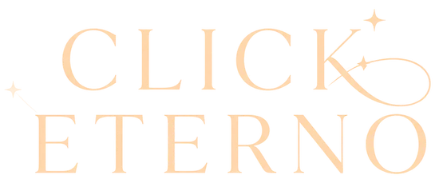

Click Eterno · EstudioElegí las fotos de la fiesta y se ordenan solas por la hora en que se sacaron: la llegada, la entrada, el vals, el brindis. Le ponés la música y sale un video listo para proyectar o para subir.
O arrastralas acá, todas juntas. También sirve una carpeta entera.
Las fotos no salen de esta computadora: el video se arma acá mismo.
Cómo sabe el orden. Cada cámara y cada teléfono escribe adentro de la foto la hora en que se sacó, y esa es la que se usa. Las que pasaron por WhatsApp la pierden: esas quedan por la fecha del archivo, marcadas en rojo, y conviene mirar si cayeron en su lugar.
En la Mac. Anda en Safari y en Chrome. Safari abre también las fotos del iPhone (HEIC); Chrome no. Para tenerla en el Dock: en Safari, Archivo → Agregar al Dock.
Mientras se crea el video tarda lo mismo que dura, y la pestaña tiene que quedar a la vista: si se esconde, se pausa y sigue sola al volver.